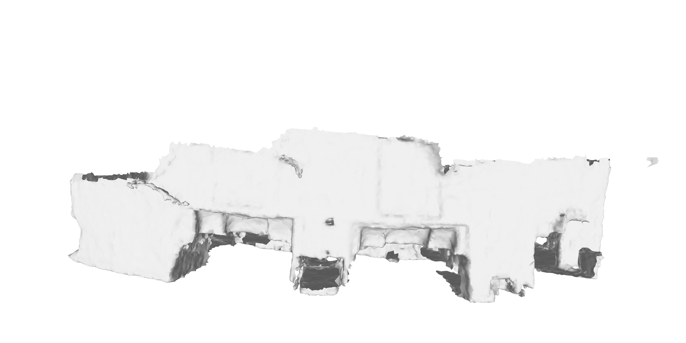

ScanNet
Reconstruction Comparing with NKSR Baseline
TL;DR: We achieve results on par with the NKSR baseline. We have the potential to be more robust against noisy inputs and to fill holes when using a multi-scale method, if we can benefit from large and small voxels.
Visualization comparsion of the reconstruction results for voxel 0.02m.
With normal inputs, the NKSR baseline is cleaner, but it cannot fill any holes in the original input. Without normal inputs, the NKSR baseline exhibits holes in the bed, while our reconstruction is more complete. Since NKSR uses the dual marching cube algorithm from SDF, and we use a single marching cube from UDF, they have thinner surfaces.
May 29: Multi-scale with Learned mask
May 5: Eikonal Loss Improvement

With the Eikonal Loss (SDF Regularizer), we achieve a much smoother surface; it's as smooth as the NKSR baseline. Therefore, we don't need ground truth normals as supervision. Also, the loss weights (0.02, 0.1, or 0.5) don't affect the results much.
Apr 30: Accuracy Error Analysis
Notes:The per-point accuracy error visualizations. The points are sampled from the reconstructed mesh forz evaluation. The accuracy errors are the distances of the points with respect to the nearest points in the ground truth mesh. Red colors indicate higher errors., Blue colors indicate lower errors..
Analysis: The accuracy error of our reconstruction comes from two parts. First, the stretched surface boundary. Second, the filled-in holes.
Apr 30: Accuracy Error Analysis (Locally)
Analysis: Our reconstruction fills in holes, which causes points not to appear in the ground truth meshes, therefore significantly increasing the accuracy errors.
SDF Reconstruction Comparing with NKSR Baseline
To Do..
Noisy Input for SDF Reconstruction: Input Points with Gaussian Noise (std=0.025m)
To Do..
Noisy Input: Input Points with Gaussian Noise (std=0.025m)
Since NKSR assumes that all inputs are zero-level sets when solving the kernel PDE, their surface is not flat with noisy inputs. However, with our method using a large voxel size (0.5m), the surface remains flat. This shows the potential for robustness in our approach if we carefully design a multi-scale method..
Large Voxels for NKSR Baseline
While using the same feature dimension (64), NKSR cannot work with a large voxel size. However, the surface, though lacking any details, is complete and has no holes.
Stage 1: Reconstruction(from Latent Codes) Visualizations
TL;DR: We can reconstruct a promising mesh surface from voxel-level latents. The mesh is reconstructed using a marching cube algorithm, same as RangeUDF.
Visualization of the reconstruction results for voxel 0.02m.
The voxel centers are queried in the UDF decoder.


Details Comparsion with Baseline RangeUDF
We have a slightly better reconstruction than RangeUDF in surface soomthness and completeness. And we use 4x smaller latent space compared to RangeUDF.
Ablation 1: Different Voxel Sizes


The smaller voxel size has a larger latent space, which leads to more details in reconstruction.
Ablation 2: Different Input point number

On the left, the reconstruction is generated using all points as input. This is the actually case we used in downstream tasks. There are many details for voxel 0.1m and 0.02m.
On the right, the reconstructions are generated using 10K and 30K points as input. When using only 10K input points, there are some holes, but the reconstruction is still complete.
On the right, the reconstructions are generated using 10K and 30K points as input. When using only 10K input points, there are some holes, but the reconstruction is still complete.
Ablation 3: Remove Interpolation part

Using interpolation, the reconstruction is smoother, especially at the boundaries of voxels.
There is an interesting observation: when using a large voxel size (0.5m), the reconstruction can fill in some large holes in the ground truth point cloud, such as the holes on the floor. This may affect the Chamfer Distance since the accuracy is worse after filling the holes.
Ablation 4: Remove Interpolation part(details)


Without interpolation, the reconstruction includes more small details. That's why the Chamfer Distance (CD) is similar However, those small objects are usually unlabeled in the ScanNet dataset. So, I "guess" that in the downstream tasks, the interpolated version is still better.